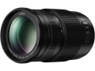

器材
党
全部器材
产品年表
名词百科
榜单
器材库
> APS画幅镜头 > LUMIX G VARIO 100-300/4-5.6 II POWER O.I.S.

松下
LUMIX G VARIO 100-300/4-5.6 II POWER O.I.S.
分类
APS画幅镜头
点评
0 条
图片
0 张
评测
0 篇
为配合配备5轴防抖的机身而推出的升级版镜头。
产品类型
APS画幅镜头
综合评分
暂无评分
无忌评测
手持1/20秒出片 松下100-300/F4-5.6 Ⅱ评测
规格参数
网友点评
(0)
产品图 / 样片
(0)
评测文章
(0)
详细规格
发布日期
2017-01-04
厂家推荐价格
82,000.00 （日元）
焦距
100mm-300mm
等效35mm画幅焦距
200mm-600mm
最大光圈
f/4-5.6
最小光圈
f/22
镜头结构
17片/12组
低/超低色散镜片
1片
光圈叶片
7片
最近对焦距离
150cm
最大放大倍率
0.21倍 / （等效35mm画幅）0.42倍
滤镜口径
67mm
镜头卡口
Micro 4/3
防抖
是
颜色
黑色
尺寸
73.6×126mm
重量
520g
该产品暂无存档的网友点评
该产品暂无存档的产品图
评测 / 相关文章
该产品暂无存档的评测文章
相关文章
［试用］松下100-300 F4-F5.6 II Power O.I.S样张
（原站已下线）
［试用］手持1/20秒出片 松下100-300/4-5.6 Ⅱ评测
（原站已下线）